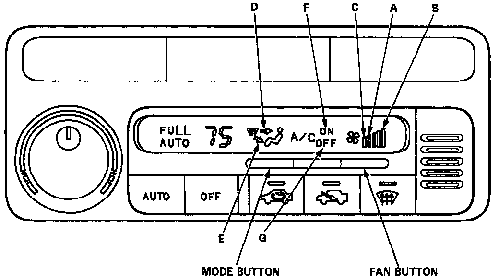
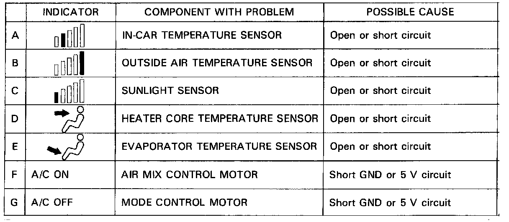
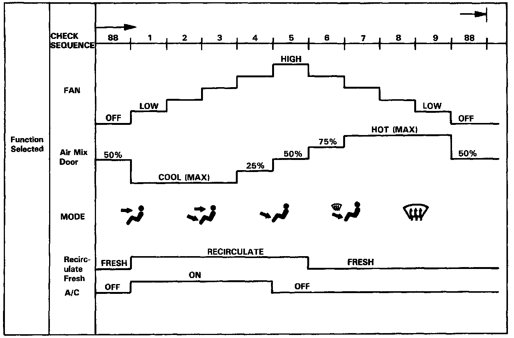

Initial Inspection and Diagnostic Overview


SELF-DIAGNOSIS CIRCUIT CHECK
- The Automatic Climate Control System has a built-in self diagnosis feature.
- To run it, turn the ignition switch ON. Set the temperature dial to 60°F 118°C), then gradually move the dial up the temperature range to 5O°F (32°C). At each temperature setting, push both the AUTO and OFF buttons on the control unit at the same time. Wait for at least one minute for the system to readjust and check for problems.
- If any problems are found in circuits "A" through "G", the system will indicate which circuit has the problem by lighting the respective indicator light.
NOTE: The climate control unit does not memorize which self-diagnosis indicator lights come on. If you turn the ignition switch OFF, the indicator light memory will be lost.
NOTE:
- The in-car temperature sensor (circuit "A") is built into the climate control unit. If this indicator lights, replace the climate control unit.
- For problems in circuits "B" through "G", refer to Diagnostic Flowcharts.
NOTE:
- When you turn the ignition switch OFF, the self-diagnosis function will be canceled.
- After completing repair work, run once again the self-diagnosis to make sure that there are no other malfunctions.

FUNCTION SELECTION AND OPERATION CHECK
- This check will quickly and automatically select and operate all functions of the climate control system, in the combinations and sequence shown. It may help clarify a problem, or identify one that didn't shown up when you performed the self-diagnosis circuit check.
- Push in both the MODE and AUTO buttons and hold them in while you start the engine. The climate control unit will then automatically run the check in eight steps, one step every five seconds.
- To stop at one of those steps, push the FAN button; to continue, push it again for each step after that. Pushing the OFF button or turning the ignition switch OFF, will turn off the check.
- Check the temperature, volume, and source of the air flow, and compare it to what the chart shows it should be.